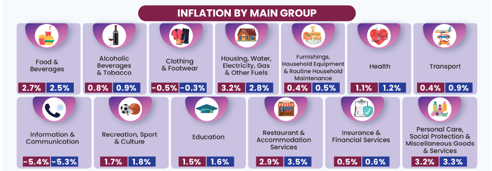

Should Malaysia rely on a single national income threshold for cash transfers, or take differences in income across states into account when targeting support?
Falling national inequality masks substantial income differences across states. These differences warrant closer attention when targeting cash transfers, rather than relying on national figures alone.

Source: Department of Statistics Malaysia, Consumer Price Index, October 2025, Chart 3.
Added a message title, direct labels and distinct colours and line styles; narrowed the y-axis range to make differences between inflation measures easier to see.
https://api.worldbank.org/v2/country/{countries}/indicator/{indicator}{countries}: ISO-3 country codes, joined with ; (here mys;sgp;tha;idn).{indicator}: the series code from data.worldbank.org (here SP.DYN.TFRT.IN, total fertility rate).?format=json: return JSON instead of the default XML.&per_page=1000: return all rows on one page (the default of 50 would cut off older years).[metadata, data]. The metadata gives page counts and the last update date; the data is one record per country-year with date, value and a nested country.value name. Within the data part it is tidy (long form). Vega-Lite reads it with "format": {"property": "1"}. Years without data are null and are filtered out.https://api.worldbank.org/v2/country/mys;sgp;tha;idn/indicator/SP.DYN.TFRT.IN?format=json&per_page=1000Notebook: Google Colab notebook (scraping, cleaning and tidying)
I scraped DOSM figures from Wikipedia using requests and BeautifulSoup, addressing combined values, numerical typos and merged cells while preserving missing data during tidy reshaping.
AI use. I used Claude (Anthropic) for coding and data tasks: writing and debugging the HTML, Vega-Lite chart specifications and the Python scraping notebook, and transcribing data values from the DOSM chart for CC4.